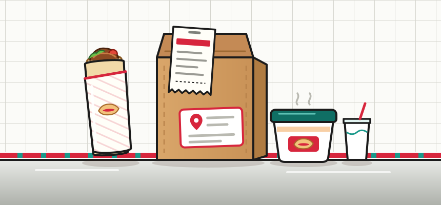

Ofise öğle paketi: adetleri seçin, fiş WhatsApp'a gitsin
Sayaçlarla adetleri girin, saati ve tercihleri seçin. Sipariş fişi siz seçtikçe yazılır; mesajı WhatsApp'ta açıp kendiniz gönderirsiniz. Mesaj bir taleptir: uygunluk ve tutar konuşulunca sipariş kesinleşir.
İstanbul'da saat
08:00–21:00
Pazartesi–Cumartesi 08:00–21:00
Öğle saatlerinde siparişinizi önceden yazmak işinizi kolaylaştırır.
Sipariş fişi
Menü panosunda “+” ile eklediğiniz kalemler burada hazır bekler. Adetleri artırıp azaltın; sağdaki (telefonda aşağıdaki) fiş, WhatsApp'a gidecek mesajın ta kendisidir.
Pide
- Kıymalı pideSoğanlı, biberli kıyma0
- Kuşbaşılı pideKüçük doğranmış etle0
- Kaşarlı pideEtsiz; yumurtalı olabilir0
- Karışık pideKıyma ya da kuşbaşı ve kaşar0
- Sucuklu kaşarlı pide0
- Peynirli pideEtsiz; beyaz peynirli0
- LahmacunLimon ve maydanozla0
Pide tercihleri
Döner
- Dürüm dönerLavaşta0
- Tavuk dürümVarsa0
- Porsiyon dönerTabakta0
- Pilav üstü döner0
- Ekmek arası dönerYarım ekmek0
- Pideli dönerVar mı, sorun0
Döner tercihleri
Çorba
- Mercimek çorbasıEtsiz0
- Ezogelin çorbasıEtsiz0
- Tavuk suyu çorba0
- Yayla çorbasıYoğurtlu0
- İşkembe çorbasıKazanda mı, sorun0
- Günün çorbasıNe varsa0
Çorba tercihleri
Yanında
- Ayran0
- Şalgam suyuAcılı ya da acısız0
- MeşrubatÇeşidini nota yazın0
- Su0
Yanında tercihleri
Herkese aynısından
Ofiste kaç kişisiniz? Sayıyı girin, tek dokunuşla herkese ayran ya da çorba yazın.
Teslim ve iletişim
Fiş boş. Adetleri artırdıkça sipariş mesajınız burada satır satır yazılır.
WhatsApp kullanmıyorsanız mesajı kopyalayıp 0552 669 40 76 numarasına SMS olarak gönderebilir ya da arayıp okuyabilirsiniz.
Fişten sofraya
Sipariş, mesajlaşmayla netleşir. Sitedeki fiş yalnızca sizin yerinize düzgün bir mesaj yazar; hiçbir şeyi kendiliğinden göndermez.
Fişi doldurun
Adetleri seçin; tercihleri, saati ve varsa adresi ekleyin. Mesaj fişte aynen görünür.
Mesajı gönderin
“WhatsApp'tan gönder” sohbeti mesaj yazılmış olarak açar. Göndermeden önce dilediğiniz gibi düzeltin.
Netleştirin
Uygunluk, saat ve tutar konuşulduktan sonra siparişiniz kesinleşir.
Ofis adresi nasıl yazılır?
Plazalarda ve hanlarda eksik bir adres, paketin doğru masaya ulaşmasını zorlaştırır. Mesajınıza şu satırları eklemek işi kolaylaştırır:
- FirmaKapıdaki ya da resepsiyondaki adıyla firma adı
- BinaBina ya da han adı, varsa blok harfi
- Kat, daireKat numarası ve kapı ya da ofis numarası
- GirişResepsiyon, güvenlik ya da turnike notu
- KişiPaketi teslim alacak kişinin adı ve telefonu
- SaatÖğle arasının başladığı saat

Paket siparişte merak edilenler
Mesajı gönderince sipariş kesinleşir mi?
Hayır. Mesaj bir taleptir; uygunluk, saat ve tutar konuşulduktan sonra siparişiniz kesinleşir.
Adrese teslim var mı?
Bu, adresinize ve saate göre değişebilir. Fişte “Adrese getirilsin” seçeneğini işaretleyip adresinizi yazın; size bilgi verelim.
Ödeme nasıl yapılır?
Ödeme seçeneklerini sipariş sırasında sorun; mesajınızın not kısmına tercihlerinizi de yazabilirsiniz.
Fatura ya da fiş alabilir miyiz?
Fatura veya fiş ihtiyacınızı ve firma bilgilerinizi mesajda belirtin, bilgi verelim.
Kalabalık bir grup için de bu fişi kullanabilir miyim?
Kullanabilirsiniz. Toplantı ve ekip yemekleri için toplu yemek sayfasındaki planlayıcı, kişi sayısına göre kaba bir liste de çıkarır.
Seçtiğim adetler nerede saklanıyor?
Yalnızca sizin tarayıcınızda. Başka sayfaya geçtiğinizde fiş kaybolmasın diye tutulur; “Fişi temizle” ile silebilirsiniz.